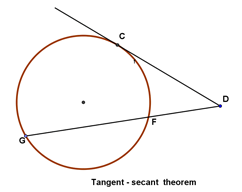
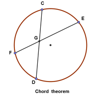

Equation of a circle :
In an $x-y$ coordinate system, the circle with center $(a, b)$ and radius $r$ is the set of all points $(x, y)$ such that:
$$ (x-a)^2 + (y-b)^2 =r^2 $$
Circle centered at the origin:
$$ x^2 + y^2 = r^2 $$
Parametric equations
$$ \begin{aligned} x &= a + r\,\cos t \\ y&= b + r\,\sin t \end{aligned} $$
where $t$ is a parametric variable.
In polar coordinates the equation of a circle is:
$$ r^2 - 2\cdot r \cdot r_0\cdot cos(\Theta - \phi ) + r_0^2 = a^2 $$
Area of a circle
$$ A = r^2\pi $$
Circumference of a circle
$$ C = \pi \cdot d = 2\cdot \pi \cdot r $$
Theorems:
(Chord theorem) The chord theorem states that if two chords, $CD$ and $EF$, intersect at $G$, then:
$$ CD \cdot DG = EG \cdot FG $$


(Secant - secant theorem) If two secants, $DG$ and $DE$, also cut the circle at $H$ and $F$ respectively, then:
$$ DH \cdot DG = DF \cdot DE $$
(Tangent chord property) The angle between a tangent and chord is equal to the subtended angle on the opposite side of the chord.